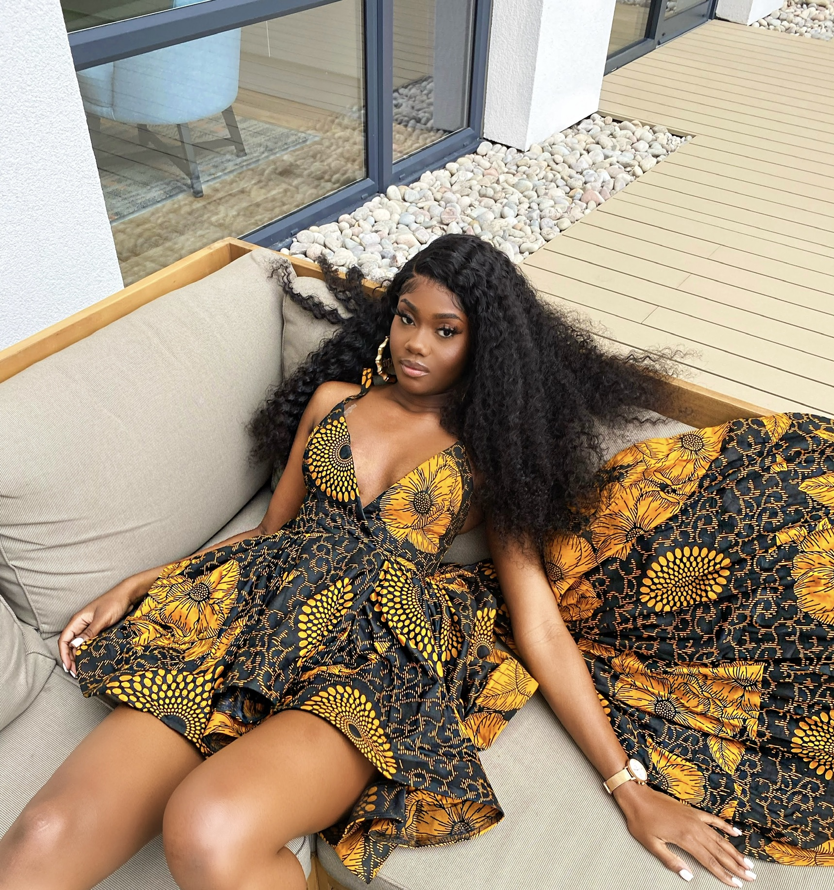

Welcome! My name is Vanessa, I'm an aspiring Frontend Developer from Manchester and this page is dedicated to tracking my journey downthe technology route. I've recently gotten involved in coding, my goal... to use the knowledge and skills I acquired along the way to create and bring to life a world of endless possibilities. With every line of code I write, I hope to take you along with me on my journey of self discovery.

Born in the DRC under the Brutal regime of Kabila the Son, my early childhood was characterised by violence, political unrest and exposure to the cruellest problems plaguing the continent of Africa. It was here that my passion for problem solving and being innovative was born because as a young African living in Africa, problems surrounded every aspect of the world I grew up in. Moving to the UK at the tender age of seven years old gave me the opportunity to start over, it was almost as though God turned back the clock of time, and I was blessed and reborn. My childhood in the UK paved the way for the developer I am today, the UK, unlike the DRC, helped me put together the tools I had at my disposal to investigate the world around me. The developer I am today is the visual representation of my hybrid-identity as a young African displaced from the mother continent, a young Black British woman whose British roots have been forged within the struggles of the history of Black and Brown bodies in the United Kingdom. From the code I write, to the way I structure my code, the language I use, all parts of it are my deliberate attempt to create a world that makes sense of the world I've lived and the events I've witnessed. Coding is the tool through which I've chosen to emancipate myself, a woman of colour, of rich history and deep wounds, in doing so I hope to emancipate everyone who identifies with my story.
A look into my history
The developer I am today is the result of the experiences I've had throughout my life, as the things that I've encountered in my personal, academic and career journey have served to mould me into an individual who not only thinks critically, but also uses a holistic approach to solving problems. Many of my experiences, although not directly linked to the technology sector, have allowed me to strengthen the soft skills that make me an effective problem solver. The next section is dedicated to providing my readers a brief overview of my experiences.
"The World is my oyster"
During my time in college, I worked at the British Education and Business Connections TD as a personal assistant. This experience was pivotal in my early career development, as it exposed me to the inner workings of businesses, as within my role, I was tasked with handling company sensitive information. As well as this, the experience helped develop my interpersonal skills because as the director's assistant, I was often contacted by a variety of individuals, from our stakeholders in the local community, to other businesses, as well as, the local authorities. Thus, I developed strong and flexible communication skills, as through the role, I learnt the importance of having an adaptive communication style. I've extrapolated this throughout my coding experiences, as I look to write codes that are easily accessible and understandable to other coders, as well as, code that effectively captures the attention of it's target audience.
"World Stop"
Outside my Politics and International Studies undergraduate, I volunteered and eventually joined the executive committee of Warwick Inspire, a student-led volunteering society located in the University of Warwick. Having inherited my role at a time when the COVID-19 pandemic seriously challenged all aspects of society and life as I knew it, I was challenged to demonstrate my resilience and perseverance. In a world where everything became increasingly digitised, I demonstrated my rapid-adaptability skills by leveraging the power of technology to provide members of my society and local community with digital interactive webinars, and events. This ability to find solutions to problems will utilise the power of technological ingenuity is a skill you'll continue to encounter with all my codes.
"A Whole New World"
Currently, as a Developer I'm at the most exciting part of my coding journey. Having joined the Black CodHer Bootcamp in November, the same month that I embarked on a year abroad studying in Brussels, it seems as though there's a brave new world ahead of me. The tide turned and many moons passed, at the call of purpose, everything broke loose. The old world had burned turned to ashes and rising from it was the new world, both literally and symbolically. This part of my journey is important to me because it's all about having faith and remaining positive. I find myself displaced from all I previously knew but I remind myself of words that were written which will surely come to pass, for the Lord had declared that he “brought us into this place and gave us this land” and he “set the land before” her for her to “take possession of the land.” It was here that you came to encounter her, it was here that she learnt of her identity. For it was here that which was hidden was revealed, and that's it. That's the secret behind this new life I've forged for myself, faith has aligned my footsteps towards destiny…will you join on this journey?